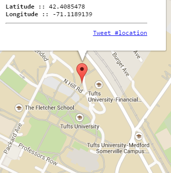
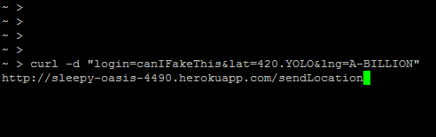
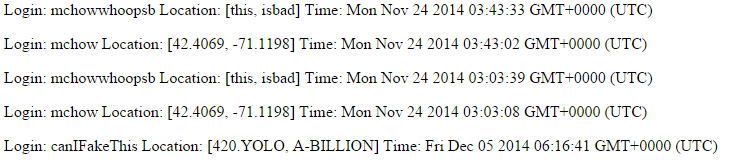
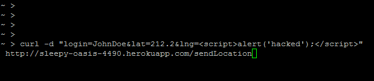

Security Assessment for Caroline Ramani
Prepared by
Dylan Phelan
-- 12/2/2014
Introduction
This security assessment aims to investigate any pitfalls found in
Caroline Ramani's web application.
The aim of this application, according to the
project specifications laid out here
is to develop a sever-side web application that maintains user login
check-ins for a long period of time. While the application meets a large
portion of the specification requirements, there are several vulnerabilities
that would need to be addressed before usage in any public sense.
Methodology
Most of the project's vulnerablities were found with a simple black box
approach, testing a few common faults in web engineering. Once a
few solid problems were pinpointed, a glance over the source code
pointed me towards a couple of other server-side faults that could
leave the web-app open for attacks
Abstract of Findings
Five vulnerabilities were pinpointed, the majority of which
stem from a strong faith in the client's external input. In overview,
the weakpoints to be discussed can lead to server crash, cross-side
scripting that affects later users, and access to the entire database
by anyone -- all of which pose issues for public usage.
Issues Found
Issue: Location Faking
-
Affects the POST API
-
Severity of Issue: LOW . The problem is not a huge issue
as of the current implementation, since there are no rewards
to be reaped from the information sent, the data serving mostly
as a static database. But the issue should be address in order
to make the API both accurate and, consequently, more versatile.
-
Description of Issue: As of current the implementation
there is no check in place to verify if the client's lat
and lng information. In the event that this API was to be
used for use in any public sphere, the lack of cross reference
means the client can very easily forge any information sent to
the server. This could cause problems if the API information is
to be used in any system where there are incentives to be in
certain locations -- people could easily forge the information
and reap the rewards. It's also worth noting that any
entries can be freely entered into the database for lats
and lngs, even values that aren't floats or ints.
-
Proof of Vulnerability: Using a website called
crtlq.org
I can find my lat and lng through their integrated googlemaps API
which uses geolocation to gather location information. At the same
time, however, I can use a terminal to make a POST request
using any value I'd like as my lat and lng, and see that
the data gets successfully input to the database.



-
Resolution: Using geolocation data from the browser,
GPS location from any GPS-enables/mobile devices, or
interfacing with a third-party API such as Google Maps
for corroborative location data. Furthermore, these
could be used in lieu of the current schema, in order to
give the client one less opportunity to forge their
information. We recognize that these alternatives
are not be-all-end-all solutions, but they are
certainly further precautions that would make it
more difficult for users to falsify login information.
To address the problem of input type, using the function on lat
var floatlat = parsefloat(request.body.lat)
and on lng similarly, then verifying that the input
is the same as it was when it arrived with
if(floatlat == request.body.lat && ...) can
ensure that the data originally receieved was already a
floating point value, since the parser made no changes
to what was already a valid float.
Issue: Wild Card Access
-
Affects the GET API
-
Severity of Issue: LOW. The issue is easily remedied and
and, in the worst case, simply alllows for free use of the
API. This may be an issure in terms of tracking who is commiting
what to the database and
-
Description of Issue: In order to allow other clients access
to the implemented API, CORS has been activated for all
web addresses. The benefits to this are largely conveinence-centric:
no authentication is needed in order to allow third parties to
interface with the web application, and the developer doesn't
need to approve any aspiring third parties before interacting with
the web app. The obvious problem with this is exactly what makes
it a convenience: anyone can use it. Server space
and database storage aren't free commodities, and doling
out paid resources free of charge is never a bright idea.
As of the moment, the minimal (read: free-of-charge) structure
in place means no real concern is faced, but the current setup
is far from scalable for long-term sharing.
-
Proof of Vulnerability: A simple snapshot of the source code
should be sufficient proof for the claim:

-
Resolution: Restricting access to a set number of domains
can be done simply by replace the wild card -- * -- with
a series of url's approved by the developer for access.
If expansion becomes a goal in the future, implementing
an automated token system may be a solution to explore.
Issue: Spamming Servers
-
Affects the POST API
-
Severity of Issue: MEDIUM. Due to the current scope
of the project there shouldn't be too much concern with
one website sending too much traffic, but a person with
malicious intentions could very easily fill the database
with a single spam script.
-
Description of Issue: As of the current implementation,
there is no system in place to limit the number of posts
or requests a single client can make. Because of this,
any soul with nefarious intentions can overload the
database used with a bunch of garbage information,
possibly forcing the database to double its capacity.
-
Proof of Vulnerability: A simple shell script shown
below will, as is evidenced by the additional photos,
fill the database well up beyond its initial capacity,
ultimately reaching the point where the DB's max
size is reached and the storage space must be doubled.


-
Resolution: A simple google search reveals that there
a plethora of rate-limiting API's available through
node.js, and almost certainly any one of them would do.
In particular, here is a snipper of sample limiter code
from
John Hurliman

Issue: Cross Side Scripting
-
Affects the POST API
-
Severity of Issue: HIGH. Persistent cross side scripting is a huge
error that will affect any users who load any of the tainted
data. More imporantly, the server can overload itself in the instance
of an infinte loop, thereby DOS the entire web application.
-
Description of Issue: All the data submitted through the POST
API is input as it is received, leaving room for users to
submit malicious Javascript or HTML into the database. When
these submissions are then loaded onto a particular client's browser
the effects can range anywhere from a harmless popup to complete
window redirection and infinite looping, denying any potential
users access to their information.
-
Proof of Vulnerability: Information for a user other than myself
can be sent without any verification, placing me in a position to jepordize
another person's database by simply inserting malicious javascript:



-
Resolution: The input should be cleaned of any invalid or nefarious characters
before being input into the database. A classic move would be to remove any
characters that have been blacklisted, using code on a given string
as follows:
str.match(/[\d\w\s\]|[\~\!\@\#\$\^\*\-\_\+\;]*/g).join('');
Conclusion
The issues described above leave the current web application open to a variety
of assaults on both the integrity of the data stored in the database, and the
reliability of the database itself. Limited verification allows anyone to submit
data for any person, to submit data that is incorrectly formatted, and for that
data to correspond to javascript that will make it difficult or impossible for
users to access their information; indeed, certain malicious users can
input data into the collections that will take down the server entirely,
temporarily disservicing other clients. Thankfully, these vulnerabilites are also
relatively easy and quick to fix. Following the above suggestions will
not make the web application full-proof, but it will certainly move it
in the direction of becoming an app that third-parties can use securely.